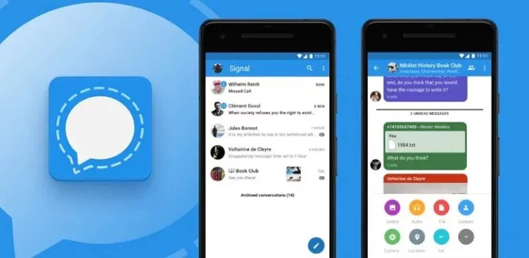
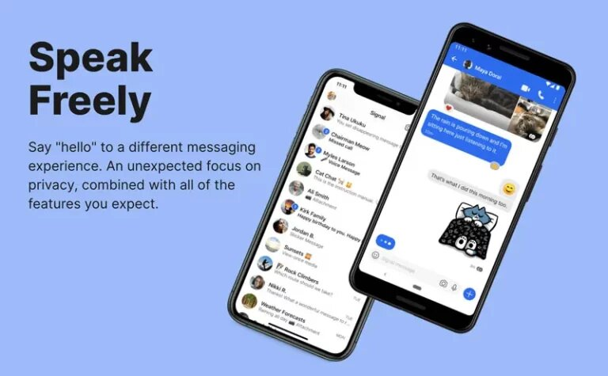

Signal යනු WhatsApp , iMessage , Facebook Messenger වැනි messaging app එකක් ලෙස සරලව හඳුන්වන්න පුලුවන්. Encrypted messaging app එකක් වන Signal 2015 සිට ආරම්භ වුණ සේවාවක් වන නමුත් මෙය වඩාත් ජනප්රියත්වයට පත් වූනේ පසුගිය මැයි 25වෙනිදා පොලිස් අත්අඩංගුවේදී කළු ජාතිකයෙකු වූ George Floyd ඝාතනය වීමේ සිදුවීම සමගයි.
මේ ඝාතනය නිසාවෙන් ඇමරිකාව ඇතුලු ලෝකය පුරා වර්ණ භේදය පිළිබඳ විරෝධතා පැන නැඟුණා. Signal app එක ආරක්ෂිත එහෙම නැතිනම් private messaging system නිසා බොහෝ විරෝධතාකරුවන් වෙනත් සන්නිවේදන ක්රමවලට වඩා මෙම යෙදුම මගින් පණිවිඩ හුවමාරු කර ගැනීමට පෙලඹුණා. කොහොම නමුත් අද වන විට, තාක්ෂණික දැවැන්තයින්, සයිබර් ආරක්ෂණ විශේෂඥයින්, මාධ්යවේදීන්, රජයේ නිලධාරීන් සහ තවත් බොහෝ අයගේ ප්රසාදය හිමි කර ගැනීමටද මෙම Signal app එක සමත්ව තිබෙනවා.

Signal app එක Android, iOS, Windows, Mac වගේම Linux සඳහා free app එකක් ලෙස ලබා ගන්න පුලුවන්. ඒ වගේම chrome ඇතුලු browser සඳහාත් මේ සේවාව නොමිලයේ ලබාගන්න හැකියාව තිබෙනවා.
මේ app එක අද වන විට අතිශය ජනප්රියත්වයට පත් වෙන්නේ මේ සේවාව හරහා පරිශීලකයන්ට ලැබෙන Extra security protocols හේතුවෙනුයි. ඒ වගේම ඔබට අවශ්ය සියලුම මූලික messaging tools (read receipts, emoji support, group chats, voice හා video calls) එයට ඇතුළත් වීමත් එයට තවත් හේතුවක්. WhatsApp මෙන්ම, ඔබේ contacts වෙත ඔබව identify කර ගැනීමට Signal යෙදුම ඔබේ ජංගම දුරකථන අංකය භාවිතා කරනු ලබන බැවින් මතක තබා ගැනීමට තවත් usernames හෝ passwords එකතු වීමක් වෙන්නෙ නම් නෑ.
Android හි සාමාන්ය කෙටි පණිවුඩ (SMS) සහ MMS පණිවිඩ යැවීමට ද Signal භාවිතා කළ හැකි වීම සුවිශේෂීත්වයක්. කොහොම නමුත් මේ පහසුකම් ලෝකයේ පරිශීලකයින් විශාල ප්රමාණයක් භාවිතා කරන Google message app එක වෙතත් Chat feature එකක් ලෙස ලබා දෙන්න Google සමාගම තීරණය කර තිබෙනවා. මේ නිසා Signal app එකට ලොකු තරඟකාරීත්වයකට මුහුණ දෙන්න නුදුරු අනාගතයේ සිදුවේවි.
සාමාන්යයෙන් app එකක setup process එක වගේම ඔබගේ අනන්යතාවය තහවුරු කර ගැනීම සඳහා ඔබගේ දුරකථන අංකය භාවිතා වෙනවා. අංකය ඇතුලත් කිරීමෙන් අනතුරුව ඔබගේ අනන්යතාවය තහවුරු කර ගැනීම සඳහා code එකක් ඔබගේ දුරකථන අංකයට පණිවුඩයක් ලෙසින් ලැබීම සිදු වෙනවා. ඉන් අනතුරුව තවදුරටත් security verification සදහා ඉලක්කම් හතරක pin අංකයක් ඔබ විසින් ඇතුලත් කල යුතු වෙනවා.

මෙම messaging app එකෙහි හි සුවිශේෂී ලක්ෂණ අතර නියමිත වේලාවකට පසු තනි සංවාද (Conversation) delete වීමට setting සැකසීමට ඇති හැකියාව කැපී පෙනෙනවා. මෙම feature එක enable කිරීම සඳහා, user profile එක මත click කර “Disappearing Messages” feature එක toggle කිරීම සිදුකළ යුතුයි.
“end-to-end encryption” ක්රියාවලිය ඇති නිසා බොහෝ අයට Signal වඩාත් ආරක්ෂිත යෙදුමක් ලෙස හඳුන්වන්න පුලුවන්. කෙසේ වෙතත්, Signal මගින් යවන පණිවිඩ ආරක්ෂිත වන්නේ යවන්නා සහ ලබන්නා යන දෙදෙනාම එම යෙදුම භාවිතා කරන්නේ නම් පමණි. ඔබ Signal හරහා සන්නිවේදනය කිරීමට කැමති නම්, මෙය download කිරීමට යමෙකුට ආරාධනා කිරීම ද මේ මගින් කල හැකි වෙනවා. තවද මෙම යෙදුම හරහා පහසුවෙන් යමෙකුගේ contact එකක් block කිරීමට හැකියාව පවතිනවා.
ඔබගේ දුරකථනයෙන් යමෙකු Signal app එකට ප්රවේශ වීම ගැන ඔබ සැලකිලිමත් වන්නේ නම්, වඩා ආරක්ෂිත ක්රියාමාර්ගයක් ලෙස සාමාන්යයෙන් ඔබගේ දුරකථනය lock කිරීමට භාවිතා කරන passcode හෝ fingerprint මඟින්ද මෙම app එක lock කිරීමේ හැකියාව පවතිනවා.
මේ app එක හැම කෙනෙකුගේම විශ්වාසය දිනාගන්න තවත් එක හේතුවක් විදිහට මෙය opensource ලෙස නිර්මාණය කර තිබීම පෙන්වා දෙන්න පුලුවන්. මේ නිසාම මේකේ තියෙන ආරක්ෂක දුර්වලතා හැමදෙයක්ම ඉතාමත් වේගයෙන් fix වෙනවා. ඒ වගේම මේක කිසිම ලොකු තාක්ෂණික සමාගමකට, ඒ කියන්නේ Google, Facebook හෝ Twitter වගේ සමාගමකට අයිති නෑ වගේම, non-profit organization එකක් විදිහට තමයි පිහිටුවලා තියෙන්නේ.
ඒ නිසාම මේකට ආදායමක් ලබන්න, එහෙමත් නැත්නම් ලාභ ලබන්න තමන්ගේ පරිශීලකයින්ගේ දත්ත අලෙවි කරන්නවත්, ඒවා targeted advertising සඳහා භාවිතා කරන්නවත් අවශ්යය වෙන්නේ නැහැ. මේ හේතුව නිසා Edward Snowden වගේ privacy එක ගැන ගොඩක් උනන්දු වෙන අය වගේම ලෝකේ පුරාම ඉන්න නළු නිළියන්ගේ සිට රාජ්යය සේවකයින් දක්වා අය මේ පිළිබඳව තම විශ්වාසය තබන්නට කටයුතු කරලා තියෙනවා.
ඉතින් ඔබත් මේ යෙදුම භාවිතා කරලා අප සමගත් ඒ ගැන ඔබේ අදහස් බෙදාගන්න අමතක කරන්න එපා.
Sources: Business Insider,
Sources: Popular Mechanics,
Sources: Digital Trends,
Sources: TechNews.LK,
Sources: Techroom